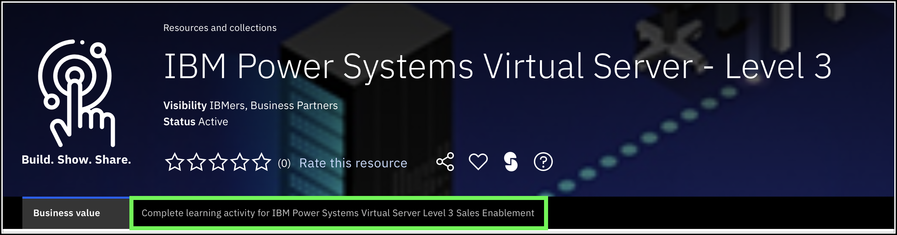

Introduction
Ways to Watch
In addition to the embedded video, IBMers and Business Partners can also download the recording from Seismic.
IBM Power Systems Virtual Server (PowerVS) delivers flexible compute capacity for Power Systems workloads. Integrated with IBM Cloud for on-demand provisioning, this offering provides a secure and scalable server virtualization environment built upon the advanced reliability, availability, and serviceability (RAS) features and leading performance of the Power Systems platform.
Everyone attempting this Level 3 plan should be familiar with PowerVS and should have completed the IBM Power Systems Virtual Server Sales Foundation Badge (Level 2) before embarking on the Level 3 content. The content here is not a replacement for the Level 1 and 2 content that is part of the previous learning plans, which are linked in the documentation accompanying this course.
- IBM: https://yourlearning.ibm.com/activity/PLAN-4E64FE2FDBF0
- Business Partners: https://learn.ibm.com/course/view.php?id=11419
This demonstration environment has multiple purposes. First, it is meant to educate Sales and Technical Sales on IBM Power Systems Virtual Server (PowerVS) and to hone seller skills to perform PowerVS demonstrations. Additionally, the IBM Technology Zone (TechZone) environment, this demonstration guide, associated click-thru demos, and videos can be re-used to perform client demonstrations.
The primary goal of this Level 3 is to focus on the Infrastructure as a Service (IaaS) capability of PowerVS and not on the operating systems supported by the offering: AIX, IBM i, and Linux. Below is an overview of this 8 Part demonstration guide:
- In Parts 1, 2, and 3, learn how the demonstration environment was built, and how to perform a "baking show" style demonstration using the IBM Cloud Portal, click-thru demonstrations, and videos. New PowerVS resources are not provisioned as part of this demonstration guide. All resources are pre-provisioned in a shared environment to save time and money.
- In Part 4, learn how to use the IBM Cloud Portal to manage PowerVS instances.
- In Part 5, learn how to access the pre-provisioned PowerVS instances using IBM Cloud Shell.
- Parts 1 through 5 provide a good foundation for performing a high-level, customer facing demonstration of IBM Power Systems Virtual Server.
- Parts 6 and 7 introduce several more technical aspects of IBM Power Systems Virtual Server including using the PowerVS IBM Cloud command line interface (CLI) plugin.
- Finally, in Part 8, learn where to find additional resources about IBM Power Systems Virtual Server, and how to complete the IBM Power Systems Virtual Server - Level 3 badge.
Remember to reserve a demonstration environment in IBM Technology Zone
Reserve an IBM Technology Zone environment ahead of time so that the instance has time to provision.
- If not already done, go to the IBM Technology Zone collection for PowerVS L3 and click the tab (at the top of the page) labeled "Complete Learning Activity for IBM Power Systems Virtual Server Level 3 Sales Enablement," as shown in the following screenshot.

- Click the Demonstration Environment tile that has the blue Reserve icon to create a request for a PowerVS instance.

- Select the Reserve Now option.
- Provide the instance a unique name. For example, 'Bienko-PowerVS-L3'.
- Set the value of Purpose to Practice / Self-Education.
- Write a brief note into the Purpose Description field explaining what the environment is to be used for.
- Under the Preferred Geography field, select Dallas 13 (or a closer location if available).
- Specify the End Date and Time for the reservation. Reservations can be made for up to 72 hours.
When satisfied, scroll down to the bottom of the page and click Submit to initiate the environment provisioning request.

- Wait for IBM Technology Zone to finish provisioning the PowerVS environment — this process takes approximately 5 to 10 minutes. When ready, an email will be sent and the Reservations page will show a PowerVS tile with the status of Ready. If marked as ready, click anywhere on the tile to drill down into details of the reservation.

Important
Clicking the PowerVS tile before it is marked as Ready (for example, if it shows as "scheduled" or "provisioning") will display incomplete data. Wait until the environment is Ready before continuing to the next step.
- Click the PowerVS tile and look towards the bottom of the page for a blue icon labelled as Download SSH Private Key. Click the blue icon and download the SSH key to a local downloads folder.

Record the file name and location!
The private key file will be used later when accessing virtual machines on PowerVS.
-
Just above the blue icon is a field labelled as User ID — record this value, as it will be needed later. It should look like the email address used to request the environment but with a period instead of an @ and it may be shortened to meet user ID length restrictions.
-
Review the emails received. One will be from IBM Cloud with the title Account: You are invited to join an account in IBM Cloud. Within the content of the email is a link to Join Now. Click the link and then Accept the invitation on the IBM Cloud portal.

Did not get an e-mail from IBM Cloud?
If you did not receive an e-mail from IBM Cloud inviting you to join the 2305900 - ITZ - ADHOC03, but you did receive a notification from ITZ that your environment was ready, try the following:
- Log into cloud.ibm.com using your IBM Cloud ID.
- Click the .
- Look for a new notification with the subject: Action required: You are invited to join an account in IBM Cloud.
- Click on the notification and then click the Join now link.
If you do not see a notification or an e-mail, try deleting the existing reservation in ITZ and try creating a new one. If that doesn't work, open a support ticket in the #itz-techzone-support Slack channel. Include the reservation ID and summarize the problem in your message.